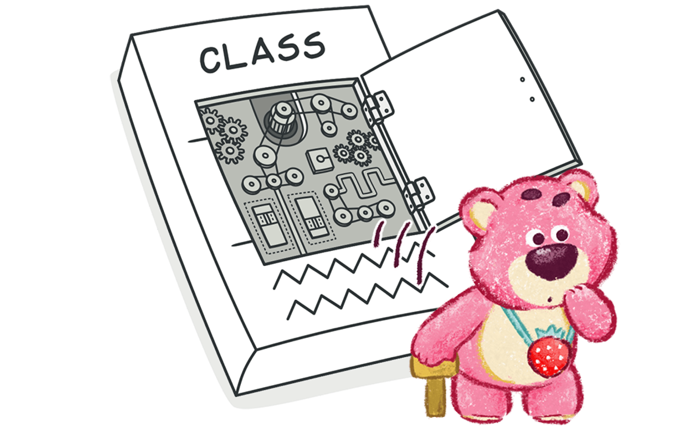
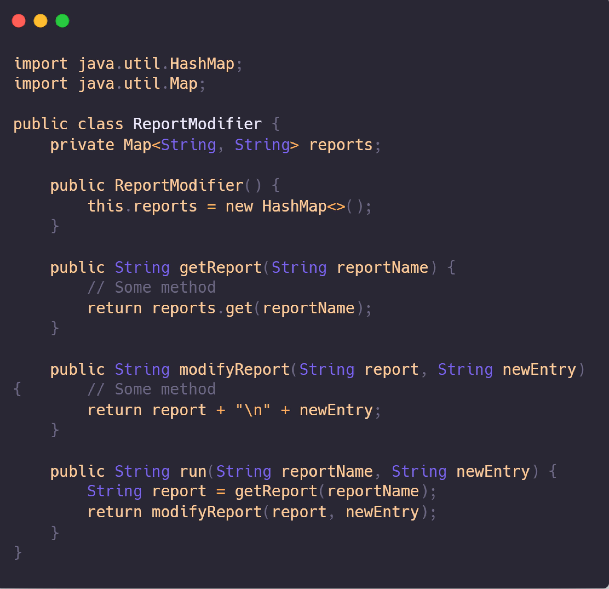

Divergent change is a code smell that occurs when making changes to a class requires changing many unrelated methods. For example, when adding a new product type, you may need to change the methods for finding, displaying, and ordering products.
Bad Code Smell
The Change Preventor
The "Change Preventers" code smell refers to code structures that are
tightly coupled or interconnected in such a way that making changes to
one part of the code requires modifications to multiple other areas of
the program. These changes often cascade across the codebase,
increasing the risk of introducing bugs and making the codebase more
difficult to maintain and extend.
#1 Divergent Change

example
Treatment
- When you notice that a class is responsible for multiple unrelated tasks or behaviors, consider splitting up its responsibilities using the Extract Class refactoring technique. This involves identifying distinct sets of behavior within the class and moving them into separate classes.
- Similarly, if you find that multiple classes share similar behavior, you might want to combine them using inheritance. This can be achieved through Extract Superclass or Extract Subclass refactorings, depending on the relationship between the classes.